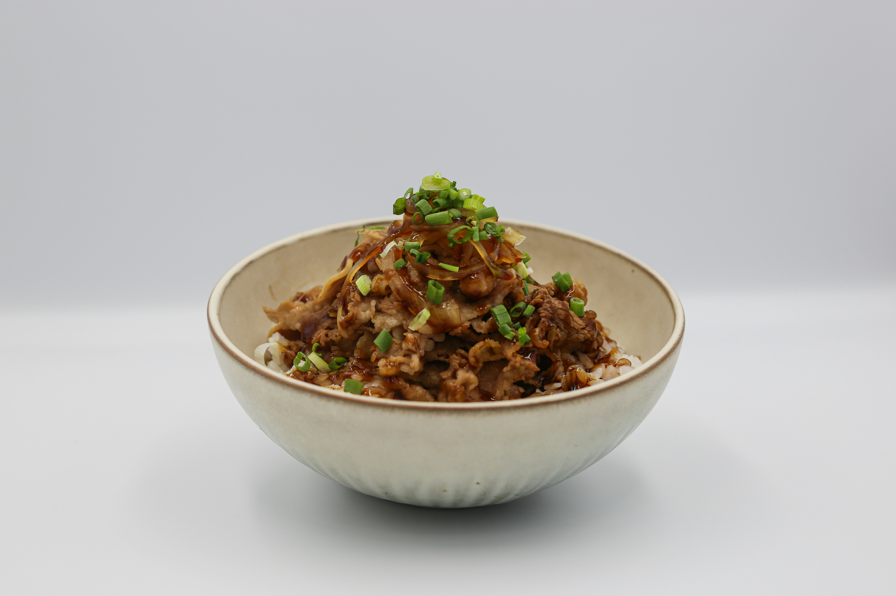

Home
Easy Korean Beef Bowl

Photo by Xavier Chng
on
Unsplash
An easy to make Korean Beef Bowl recipe that can be made in under 30 minutes!
This delicious Korean beef bowl is quick and easy to make with ground beef.
It's seasoned with fresh ginger, garlic, soy, sesame seeds, and crushed red pepper,
but these ingredients can easily be adjusted to suit your taste. Serve over warm rice or spiralized vegetables.
Ingredients
- 1 pound lean gound beef
- 5 cloves garlic, crushed
- 1 tablespoon freshly grated ginger
- 2 teaspoons toasted sesame oil
- 1/2 cup reduced-sodium soy sauce
- 1/3 cup light brown sugar
- 1/4 teaspoon crushed red pepper
- 6 green onions, chopped, divided
- 4 cups hot cooked brown rice
- 1 tablespoon toasted sesame seeds
Steps
- Gather all ingredients
- Heat a large skillet over medium-high heat
- Add beef and cook, stirring and crumbling into small pieces until browned, 5-7 minutes
- Drain excess grease
- Stir in garlic, ginger and sesame oil and cook until fragrant, about 2 minutes
- Stir in soy sauce, brown sugar, and red pepper. Cook until beef absorbs some sauce, about 7 minutes
- Add 1/2 of chopped green onions
- Serve over hot cooked rice; garnish with sesame seeds and remaining green onions